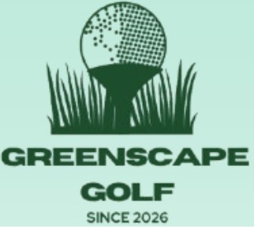

We are a social business dedicated to transforming the golf industry. Pro-performance, zero footprint. Keep your focus on the game, we'll focus on the planet.
Explore Our ProductsOur Mission: To eliminate plastic waste on golf courses worldwide by engineering premium, 100% biodegradable golf balls that perform alongside the pros.
Our Vision: A future where every swing leaves behind nothing but a legacy. We envision a golf industry that actively heals the environment, turning global fairways into catalysts for ecological sustainability.
The hidden cost of traditional plastic golf balls.
Surveys Conducted
NCAA Division 1 Golf Players
Source of long-lasting plastic pollution
Golf balls can sell for about $60/dozen
On a dozen golf balls
Interviewees explicitly care about impact